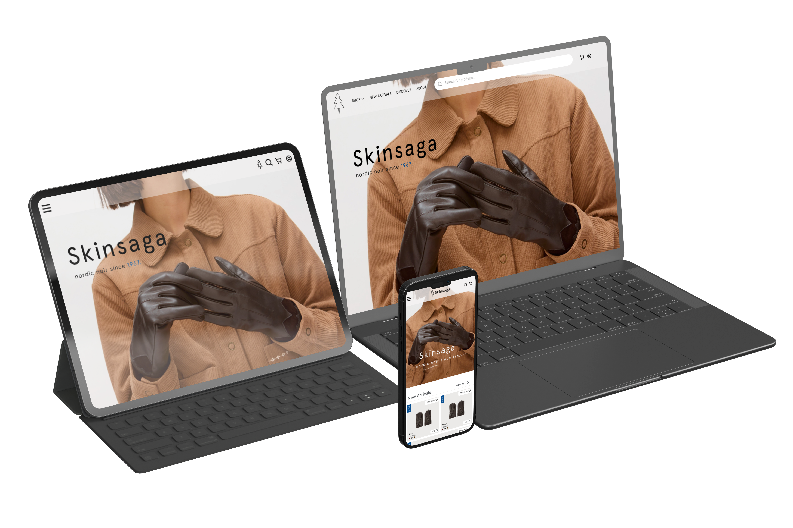
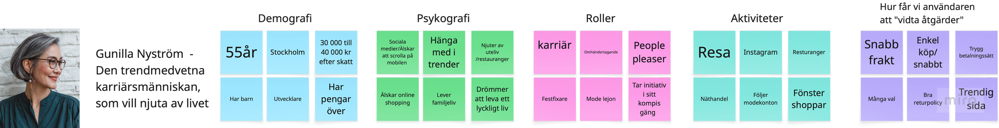
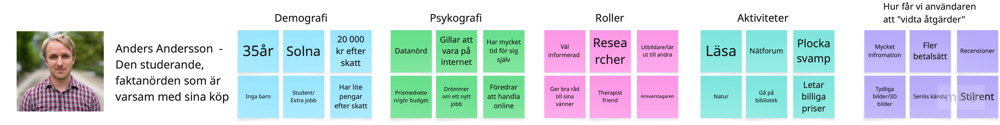
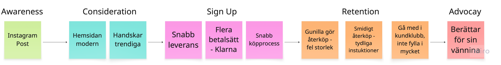
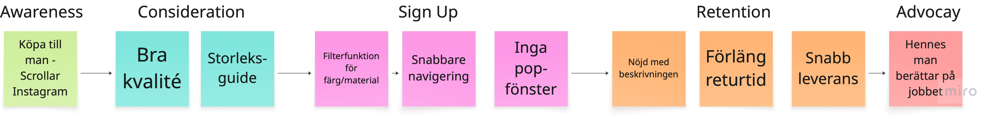

← All projects / Webbshop design
Webbshop design
In this group assignment, the task was to conduct a target audience analysis for a webshop. The goal was to move beyond “generic” or superficial demographic data (such as age, geographic location, etc.) and instead deliver insights into users’ needs, motivations, and pain points, which later was used in the individual assignment to develop a design that addresses these problems. We decided that our webshop will be selling luxury leather gloves.

Target audience analysis
The end goal with the task was to conduct a target audience analysis that would serve as a base for a webshop selling exclusive leather gloves. The target audience analysis was performed by a group of four members , while the design was individual.
Methods
In order to extract the goals, needs and pain points of our potential target analysis, we performed semi-structured interviews as well as online surveys. The participants were asked to answear questions regarding what features they considered most important in a webshop as well as personal information such as age, gender and income.
Interview
Here are some examples of questions that were asked during the interviews:
- How often do you buy clothes or accessories online?
- What is important to you when choosing an online store to potentially make a purchase from? (e.g. a Swedish company, the company’s values, its reputation, shipping and return policies)
- When you are on an online store to make a specific purchase, what makes you complete the purchase?
- What could make you abandon the purchase? (e.g. delivery time, price, payment options, lack of information)
- How much product information feels relevant to you? For example: images, size, material, 3D views, care instructions? Or would too much information feel overwhelming? What would you like to see?
- Which parts of the purchasing process feel time-consuming or unnecessary to you? Have you ever not completed a purchase because of this?
Survey
A combination of multiple and single choice questions. Link to survey results
Data analysis
In order to extract goals, needs and pain points and identify target groups from the data, we used AI. The AI tool analysed data from the interviews and surveys and identified a number of patterns and trends .
Security and Credibility
The AI-generated analysis revealed several trends and patterns in the data. For example, security and credibility were considered crucial, influenced by a website design and visual identity that are perceived as professional, the availability of well-known payment options, and clear information about the company as well as access to customer support.
Simplicity in the Purchasing Process
All respondents reacted negatively to time-consuming processes, where common points of friction were identified as slow loading times, too many steps to reach checkout, and excessive information on the homepage.
Relevant Product Information
The importance of relevant product information was emphasized as essential for making a purchasing decision. At the same time, too much information can feel overwhelming, and the ability to choose how much information is displayed was considered important.
Persona
Based on the compiled data, primarily from the survey results, we created two personas: our primary persona, Gunilla Nyström, and our secondary persona, Anders Andersson. These personas represent our target audience.
Gunilla Nyström (primary persona)

Anders Andersson (secondary persona)

Customer Journey
A customer journey map is a visual representation of a user’s or customer’s experience when interacting with a product, service, or company — from the first point of contact to the post-purchase phase. It has five phases:
- Awareness: The customer first discovers the brand through ads, social media, or word-of-mouth.
- Consideration: The customer evaluates the product against competitors, seeking reviews and detailed information.
- Purchase / Decision: The customer commits to a transaction or signs up for a service.
- Retention: Post-purchase interactions, such as onboarding and customer support, aimed at building loyalty.
- Advocacy: Satisfied customers recommend the brand to others, fueling new awareness.
Customer journeys - Primary person
Gunilla goes shopping for clothes

Gunilla buys a present

My Role
Designed questions for the interview and survey. Participated in designing personas and and customer journeys. The figma-webshop was an individual task that I designed myself based on the Target audience analysis.
Results - individual Task
Three Figma prototypes — for desktop, tablet and phone. Based on the Target audience analysis. Designed by me. In the sections below a few selected frames are presented.